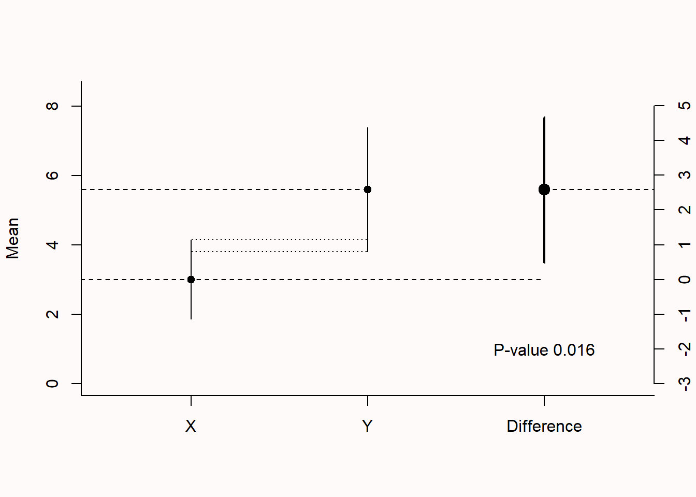
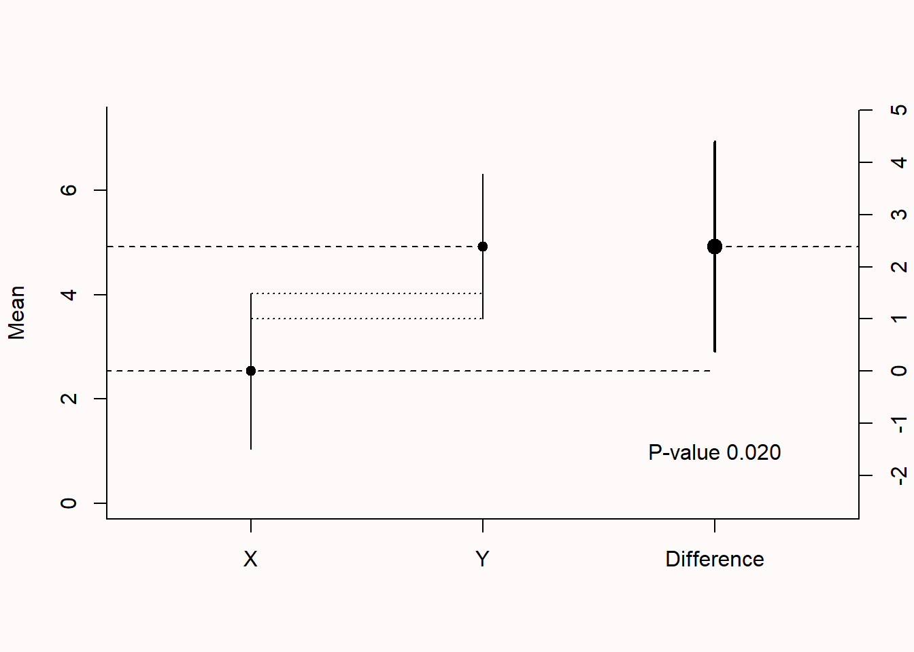

7 Confidence Intervals
When we report point estimates, we should acknowledge and quantify the uncertainty in these estimates. Confidence intervals provide a way to quantify the precision of an estimate. By reporting an estimate with a confidence interval, results are reported within a range of values that contain the true value of the parameter with a desired percentage. For example, when we report an effect size estimate with a 95% confidence interval, the expectation is that the interval is wide enough such that 95% of the time the range of values around the estimate contains the true parameter value (if all test assumptions are met).
7.1 Population vs. Sample
In statistics, we differentiate between the population and the sample. The population is everyone you are interested in, such as all people in the world, elderly who are depressed, or people who buy innovative products. Your sample is everyone you were able to measure from the population you are interested in. We similarly distinguish between a parameter and a statistic. A parameter is a characteristic of the population, while a statistic is a characteristic of a sample. Sometimes, you have data about your entire population. For example, we have measured the height of all the people who have ever walked on the moon. We can calculate the average height of these twelve individuals, and so we know the true parameter. We do not need inferential statistics. However, we do not know the average height of all people who have ever walked on the earth. Therefore, we need to estimate this parameter, using a statistic based on a sample. Although it is rare that a study includes the entire population, it is not impossible, as illustrated in Figure 7.1.
When the entire population is measured there is no need to perform a hypothesis test. After all, there is no population to generalize to (although it is possible to argue we are still making an inference, even when the entire population is observed, because we have observed a metaphorical population from one of many possible worlds, see Spiegelhalter (2019)). When data from the entire population has been collected, the population effect size is known and there is no confidence interval to compute. If the total population size is known, but not measured completely, then the confidence interval width should shrink to zero the closer a study gets to measuring the entire population. This is known as the finite population correction factor for the variance of the estimator (Kish, 1965). The variance of a sample mean is \(\sigma^2/n\), which for finite populations is multiplied by the finite population correction factor of the standard error: \[FPC = \sqrt{\frac{(N - n)}{(N-1)}}\] where N is the size of the population, and n is the size of the sample. When N is much larger than n, the correction factor will be close to 1 (and therefore this correction is typically ignored when populations are very large, even when populations are finite), and will not have a noticeable effect on the variance. When the total population is measured the correction factor is 0, such that the variance becomes 0 as well. For example, when the total population consists of 100 top athletes, and data is collected from a sample of 35 athletes, the finite population correction is \(\sqrt{(100 - 35)/(100-1)}\) = 0.81. The superb R package can compute population corrected confidence intervals (Cousineau & Chiasson, 2019).
7.2 What is a Confidence Interval?
Confidence intervals are a statement about the percentage of confidence intervals that contain the true parameter value. This behavior of confidence intervals is nicely visualized on this website by Kristoffer Magnusson: http://rpsychologist.com/d3/CI/. In Figure 7.2 we see blue dots that represent means from a sample, and that fall around a red dashed vertical line, which represents the true value of the parameter in the population. Due to variation in the sample, the estimates do not all fall on the red dashed line. The horizontal lines around the blue dots are the confidence intervals. By default, the visualization shows 95% confidence intervals. Most of the lines are black (which means the confidence interval overlaps with the orange dashed line indicating the true population value), but some are red (indicating they do not capture the true population value). In the long run, 95% of the horizontal bars will be black, and 5% will be red.

We can now see what is meant by the sentence “Confidence intervals are a statement about the percentage of confidence intervals that contain the true parameter value“. In the long run, for 95% of the samples, the orange dashed line (the population parameter) is contained within the 95% confidence interval around the sample mean, and in 5% of the confidence intervals this is not true. As we will see when we turn to the formula for confidence intervals, the width of a confidence interval depends on the sample size and the standard deviation. The larger the sample size, the smaller the confidence intervals. In Figure 7.3 we see how the confidence interval around the mean becomes more narrow as the sample size increases (assuming a standard deviation of 1). If we imagine confidence interval lines around each observed mean with a width equal to the width of the difference between the upper and lower confidence interval around 1, we see that in the long run 95% of the observed means would have a 95% confidence interval that contains the true population parameter (a mean of 1), but that approximately 5% of the means are more extreme and do not have a confidence interval that contains the population parameter of 1.

7.3 Interpreting a single confidence interval
Whenever we compute or encounter a single confidence interval it is important to realize that someone else performing exactly the same experiment would, purely due to random variation, have observed a different confidence interval, effect size, and p-value. Because of this random variation a single confidence interval is difficult to interpret. Misinterpretations are common. For example, Cumming (2014) writes “We can be 95% confident that our interval includes \(\mu\) and can think of the lower and upper limits as likely lower and upper bounds for \(\mu\).” Both these statements are incorrect (Morey et al., 2016). It is incorrect to claim we can be 95% confident that our interval includes the true population mean, because if we study whether our friend can predict whether a coin comes up heads or tails in 100 flips, and they correctly predict the coin flip in 61 out of 100 flips with a 95% confidence interval from 0.507 to 0.706, it is perfectly reasonable to use some Bayesian reasoning and assume (with more than the remaining 5% confidence) it was just a fluke, and the true success rate when guessing the outcome of coin flips is 50%. It is also incorrect to believe the lower and upper limits are likely lower and upper bounds for \(\mu\), as anyone else performing the same experiment would have observed a different confidence interval, with a different upper and lower bound, when analyzing a single sample drawn from the same population. If a lot of data has been collected (say thousands of observations) this problem practically disappears, because the remaining uncertainty is too small to matter.
One useful way to think of a confidence interval is as an indication of the resolution with which an effect is estimated. If the resolution is low, it is difficult to get a clear picture, but if the resolution is extremely high, the picture is clear enough for all practical use cases. If we have estimated an effect in a very narrow range, say a M = 0.52, 95% CI [0.49; 0.55], and we feel warranted to assume that no one cares about differences less than 0.05 on the measure, a confidence interval communicates that the data have been estimated with sufficient precision. Similarly, if the sample size is small, and the confidence is very wide, say a M = 0.52, 95% CI [0.09; 0.95], and we feel warranted to assume that differences of almost 1 on the measure matter for situations in which the estimate would be used, the confidence interval communicates that the effect size estimate is not precise enough. This evaluation of the resolution of the estimate can be useful, and is missing if only a p-value or effect size are reported. For this reason, it is recommended to report confidence intervals around estimates. Confidence intervals are often reported within brackets, but an interesting alternative (especially for tables) is to use subscripts: \(_{0.09}0.52_{0.95}\) (Louis & Zeger, 2009).
It is tempting to use a Bayesian interpretation of a single confidence interval, where one would say “I believe there is a 95% probability that this interval contains the true population parameter”. A Bayesian interpretation has lost frequentist error control which means that depending on the prior this belief might be misguided in much more than 5% of the studies. This is not something a Bayesian worries about, as the focus of their inferences is not on limiting errors in the long run, but on quantifying beliefs. A frequentist can not make probability claims for single observations. After the data has been collected, a frequentist can only state that the current confidence interval either contains the true population parameter, or it does not. In the long run, \(\alpha\)% of the confidence intervals will not include the true population parameter, and this single confidence interval could be one of these flukes. Even though a frequentist and Bayesian confidence interval can be identical under certain priors (Albers et al., 2018), the different definitions of probability lead to different interpretations of a single confidence interval. A frequentist can easily interpret a confidence procedure, but it is not so easy to interpret a single confidence interval (Morey et al., 2016). This should not surprise us, because it is difficult to interpret any single study (which is why we need to perform replication studies). When confidence intervals are interpreted as a long-run procedure, they are directly related to p-values.
7.4 The relation between confidence intervals and p-values
There is a direct relationship between the CI around an effect size and statistical significance of a null-hypothesis significance test. For example, if an effect is statistically significant (p < 0.05) in a two-sided independent t-test with an alpha of .05, the 95% CI for the mean difference between the two groups will not include zero. Confidence intervals are sometimes said to be more informative than p-values, because they not only provide information about whether an effect is statistically significant (i.e., when the confidence interval does not overlap with the value representing the null hypothesis), but also communicate the precision of the effect size estimate. This is true, but as mentioned in the chapter on p-values it is still recommended to add exact p-values, which facilitates the re-use of results for secondary analyses (Appelbaum et al., 2018), and allows other researchers to compare the p-value to an alpha level they would have preferred to use (Lehmann & Romano, 2005).
In order to maintain the direct relationship between a confidence interval and a p-value it is necessary to adjust the confidence interval level whenever the alpha level is adjusted. For example, if an alpha level of 5% is corrected for three comparisons to 0.05/3 - 0.0167, the corresponding confidence interval would be a 1 - 0.0167 = 0.9833 confidence interval. Similarly, if a p-value is computed for a one-sided t-test, there is only an upper or lower limit of the interval, and the other end of the interval ranges to −∞ or ∞.
To maintain a direct relationship between an F-test and its confidence interval, a 90% CI for effect sizes from an F-test should be provided. The reason for this is explained by Karl Wuensch. Where Cohen’s d can take both positive and negative values, r² or η² are squared, and can therefore only take positive values. This is related to the fact that F-tests (as commonly used in ANOVA) are one-sided. If you calculate a 95% CI, you can get situations where the confidence interval includes 0, but the test reveals a statistical difference with a p < .05 (for a more mathematical explanation, see Steiger (2004)). This means that a 95% CI around Cohen’s d in an independent t-test equals a 90% CI around η² for exactly the same test performed as an ANOVA. As a final detail, because eta-squared cannot be smaller than zero, the lower bound for the confidence interval cannot be smaller than 0. This means that a confidence interval for an effect that is not statistically different from 0 has to start at 0. You report such a CI as 90% CI [.00; .XX] where the XX is the upper limit of the CI.
Confidence intervals are often used in forest plots that communicate the results from a meta-analysis. In the plot below, we see 4 rows. Each row shows the effect size estimate from one study (in Hedges’ g). For example, study 1 yielded an effect size estimate of 0.53, with a confidence interval around the effect size from 0.12 to 0.94. The horizontal black line, similarly to the visualization we played around with before, is the width of the confidence interval. When it does not touch the effect size 0 (indicated by a black vertical dotted line) the effect is statistically significant.

We can see, based on the fact that the confidence intervals do not overlap with 0, that studies 1 and 3 were statistically significant. The diamond shape named the FE model (Fixed Effect model) is the meta-analytic effect size. Instead of using a black horizontal line, the upper limit and lower limit of the confidence interval are indicated by the left and right points of the diamond, and the center of the diamond is the meta-analytic effect size estimate. A meta-analysis calculates the effect size by combining and weighing all studies. The confidence interval for a meta-analytic effect size estimate is always narrower than that for a single study, because of the combined sample size of all studies included in the meta-analysis.
In the preceding section, we focused on examining whether the confidence interval overlapped with 0. This is a confidence interval approach to a null-hypothesis significance test. Even though we are not computing a p-value, we can directly see from the confidence interval whether p < \(\alpha\). The confidence interval approach to hypothesis testing makes it quite intuitive to think about performing tests against non-zero null hypotheses (Bauer & Kieser, 1996). For example, we could test whether we can reject an effect of 0.5 by examining if the 95% confidence interval does not overlap with 0.5. We can test whether an effect is smaller that 0.5 by examining if the 95% confidence interval falls completely below 0.5. We will see that this leads to a logical extension of null-hypothesis testing where, instead of testing to reject an effect of 0, we can test whether we can reject other effects of interest in range predictions and equivalence tests.
7.5 The Standard Error and 95% Confidence Intervals
To calculate a confidence interval, we need the standard error. The standard error (SE) estimates the variability between sample means that would be obtained after taking several measurements from the same population. It is easy to confuse it with the standard deviation, which is the degree to which individuals within the sample differ from the sample mean. Formally, statisticians distinguish between σ and \(\widehat{\sigma}\), where the hat means the value is estimated from a sample, and the lack of a hat means it is the population value – but I’ll leave out the hat, even when I’ll mostly talk about estimated values based on a sample in the formulas below. Mathematically (where σ is the standard deviation),
\[ Standard \ Error \ (SE) = \sigma/\sqrt n \]
The standard error of the sample will tend to zero with increasing sample size, because the estimate of the population mean will become more and more accurate. The standard deviation of the sample will become more and more similar to the population standard deviation as the sample size increases, but it will not become smaller. Where the standard deviation is a statistic that is descriptive of your sample, the standard error describes bounds on a random sampling process.
The standard error is used to construct confidence intervals (CI) around sample estimates, such as the mean, or differences between means, or whatever statistics you might be interested in. To calculate a confidence interval around a mean (indicated by the Greek letter mu: \(\mu\)), we use the t distribution with the corresponding degrees of freedom (df : in a one-sample t-test, the degrees of freedom are n-1):
\[ \mu \pm t_{df, 1-(\alpha/2)} SE \]
With a 95% confidence interval, the \(\alpha\) = 0.05, and thus the critical t-value for the degrees of freedom for 1- \(\alpha\) /2, or the 0.975th quantile is calculated. Remember that a t-distribution has slightly thicker tails than a Z-distribution. Where the 0.975th quantile for a Z-distribution is 1.96, the value for a t-distribution with for example df = 19 is 2.093. This value is multiplied by the standard error, and added (for the upper limit of the confidence interval) or subtracted (for the lower limit of the confidence interval) from the mean.
7.6 Overlapping Confidence Intervals
Confidence intervals are often used in plots. In Figure 7.5 below, three estimates are visualized (the dots), surrounded by three lines (the 95% confidence intervals). The left two dots (X and Y) represent the means of the independent groups X and Y on a scale from 0 to 8 (see the axis from 0-8 on the left side of the plot). The dotted lines between the two confidence intervals visualize the overlap between the confidence intervals around the means. The two confidence intervals around the means of X and Y are commonly shown in a figure in a scientific article. The third dot, slightly larger, is the mean difference between X and Y, and the slightly thicker line visualizes the confidence interval of this mean difference. The difference score is expressed using the axis on the right (from -3 to 5). In the plot below, the mean of group X is 3, the mean of group Y is 5.6, and the difference is 2.6. The plot is based on 50 observations per group, and the confidence interval around the mean difference ranges from 0.49 to 4.68, which is quite wide.

As mentioned earlier, when a 95% confidence interval does not contain 0, the effect is statistically different from 0. In Figure 7.5 above, the mean difference and the 95% confidence interval around it are indicated by the ‘difference’ label. As the 95% confidence interval does not contain 0, the t-test is significant at an alpha of 0.05. The p-value is indicated in the plot as 0.016. Even though the two means differ statistically significantly from each other, the confidence interval around each mean overlap. One might intuitively believe that an effect is only statistically significant if the confidence interval around the individual means do not overlap, but this is not true. The significance test is related to the confidence interval around the mean difference.
7.7 Prediction Intervals
Even though 95% of confidence intervals will contain the true parameter in the long run, a 95% confidence interval will not contain 95% of future individual observations (or 95% of future means; this will be discussed in the next section). Sometimes, researchers want to predict the interval within which a single value will fall. This is called the prediction interval. It is always much wider than a confidence interval. The reason is that individual observations can vary substantially, but means of future samples (which fall within a normal confidence interval 95% of the time) will vary much less.
In Figure 7.6, the orange background illustrates the 95% confidence interval around the mean, and the yellow background illustrates the 95% prediction interval (PI).

To calculate the prediction interval, we need a slightly different formula for the standard error than that which was used for the confidence interval, namely:
\[ Standard \ Error \ (SE) = \sigma/\sqrt(1+1/n) \]
When we rewrite the formula used for the confidence interval to \(\sigma/\sqrt(1/N)\), we see that the difference between a confidence interval and the prediction interval is in the “1+” which always leads to wider intervals. Prediction intervals are wider, because they are constructed so that they will contain a single future value 95% of the time, instead of the mean. The fact that prediction intervals are wide is a good reminder that it is difficult to predict what will happen for any single individual.
7.8 Capture Percentages
It can be difficult to understand why a 95% confidence interval does not provide us with the interval where 95% of future means will fall. The percentage of means that falls within a single confidence interval is called the capture percentage. A capture percentage is not something we would ever use to make inferences about data, but it is useful to learn about capture percentages to prevent misinterpreting confidence intervals. In Figure 7.7 we see two randomly simulated studies with the same sample size from the same population. The true effect size in both studies is 0, and we see that the 95% confidence intervals for both studies contain the true population value of 0. However, the two confidence intervals cover quite different ranges of effect sizes, with the confidence interval in Study 1 ranging from -0.07 to 0.48, and the confidence interval in Study 2 ranging from -0.50 to 0.06. It cannot be true that in the future, we should expect 95% of the effect sizes to fall between -0.07 to 0.48 and 95% of the effect sizes to fall between -0.50 to 0.06.

The only situation in which a 95% confidence interval happens to also be a 95% capture percentage is when the observed effect size in a sample happens to be exactly the same as the true population parameter. In Figure 7.7, that means we would need to observe an effect of exactly 0. However, you can’t know whether the observed effect size happens to be exactly the same as the population effect size. When a sample estimate is not identical to the true population value (which is almost always the case) less than 95% of future effect sizes will fall within the CI from your current sample. As we have observed two studies with the observed effect sizes a bit removed from the true effect size, we will find effect size estimates in future studies that fall outside the observed 95% confidence interval quite often. So, the percentage of future means that fall within a single confidence interval depends upon which single confidence interval you happened to observe. Based on simulation studies it is possible to show that on average, in the long run, a 95% CI has an 83.4% capture probability (Cumming & Maillardet, 2006).
7.9 Calculating Confidence Intervals around Standard Deviations.
If we calculate a standard deviation (SD) from a sample, this value is an estimate of the true value in the population. In small samples, this estimate can be quite far off the population value. But due to the law of large numbers, as our sample size increases, we will be measuring the standard deviation more accurately. Since the sample standard deviation is an estimate with uncertainty, we can calculate a 95% confidence interval around it. For some reason, this is rarely done in practice, maybe because researchers are often more interested in means, and less interested in standard deviations. But standard deviations are an interested property of our measures, and one could even make theoretical predictions about an increase of decrease in standard deviations between conditions. Currently, researchers rarely theorize about variation in standard deviations, and perhaps because of this, basically never compute confidence intervals around the standard deviations they report.
Keeping the uncertainty of standard deviations in mind can be important. When researchers perform an a-priori power analysis based on an effect size of interest expressed on a raw scale, they need accurate estimates of the standard deviation. Sometimes researchers will use pilot data to get an estimate of the standard deviation. Since the estimate of the population standard deviation based on a pilot study has some uncertainty (as pilot studies usually have a relatively small sample size), the a-priori power analysis will inherit this uncertainty (see the ‘Test Yourself’ questions below). To circumvent this, use validated or existing measures for which accurate estimates of the standard deviation in your population of interest are available. And keep in mind that all estimates from a sample have uncertainty.
7.10 Computing Confidence Intervals around Effect Sizes
In 1994, Cohen (1994) reflected on the reason confidence intervals were rarely reported: “I suspect that the main reason they are not reported is that they are so embarrassingly large!” This might be, but another reason might have been that statistical software rarely provided confidence intervals around effect sizes in the time when Cohen wrote his article. It has become increasingly easy to report confidence intervals with the popularity of free software packages in R, even though these packages might not provide solutions for all statistical tests yet. The Journal Article Reporting Standards recommend to report “effect-size estimates and confidence intervals on estimates that correspond to each inferential test conducted, when possible”.
One easy solution to calculating effect sizes and confidence intervals is MOTE made by Dr. Erin Buchanan and her lab. The website comes with a full collection of tutorials, comparisons with other software packages, and demonstration videos giving accessible overviews of how to compute effect sizes and confidence intervals for a wide range of tests based on summary statistics. This means that whichever software you use to perform statistical tests, you can enter sample sizes and means, standard deviations, or test statistics to compute effect sizes and their confidence intervals. For example, the video below gives an overview of how to compute a confidence interval around Cohen’s d for an independent t-test.
MOTE is also available as an R package (Buchanan et al., 2017). Although many solutions exists to compute Cohen’s d, MOTE sets itself apart by allowing researchers to compute effect sizes and confidence intervals for many additional effect sizes, such as (partial) omega squared for between subjects ANOVA (\(\omega^{2}\) and \(\omega^{2}_p\)), generalized omega squared for ANOVA (\(\omega^{2}_G\)), epsilon squared for ANOVA (\(\varepsilon^{2}\)) and (partial) generalized eta squared for ANOVA (\(\eta^{2}_G\)).
[1] "$d_s$ = -0.41, 95\\% CI [-0.72, -0.09]"MBESS is another R package that has a range of options to compute effect sizes and their confidence intervals (Kelley, 2007). The code below reproduces the example for MOTE above.
If you feel comfortable analyzing your data in R, the effectsize package offers a complete set of convenient solutions to compute effect sizes and confidence intervals (Ben-Shachar et al., 2020).
set.seed(33)
x <- rnorm(n = 20, mean = 0, sd = 2.5) # create sample from normal distribution
y <- rnorm(n = 200, mean = 1.5, sd = 3.5) # create sample from normal distribution
effectsize::cohens_d(x, y)| Cohens_d | CI | CI_low | CI_high |
|---|---|---|---|
| -0.443983 | 0.95 | -0.9050135 | 0.0180575 |
I am personally impressed by the way the effectsize package incorporates the state of the art (although I might be a bit biased). For example, after our recommendation to, by default, use Welch’s t-test instead of students t-test (Delacre et al., 2017), and based on a recent simulation study recommended to report Hedges’ \(g_s^*\) as the effect size for Welch’s t-test (Delacre et al., 2021), the effectsize package was the first to incorporate it.
| Cohens_d | CI | CI_low | CI_high |
|---|---|---|---|
| -0.5328286 | 0.95 | -0.8972774 | -0.1613137 |
Free statistical software jamovi and JASP are strong alternatives to SPSS that (unlike SPSS) allows users to compute Cohen’s d and the confidence interval for both independent and dependent t-tests.
For jamovi, the ESCI module allows users to compute effect sizes and confidence intervals, and is accompanied by educational material that focuses more on estimation and less on testing (Cumming & Calin-Jageman, 2016).

JASP offers a wide range of frequentist and Bayesian analyses, and in addition to Cohen’s d also allows users to compute omega squared \(\omega^{2}\), the less biased version of \(\eta^{2}\) (Albers & Lakens, 2018; Okada, 2013).


7.11 Test Yourself
Q1: Go to the online app by Kristoffer Magnusson: http://rpsychologist.com/d3/CI/. You might want more confidence intervals to contain the true population parameter than 95%. Drag the ‘Slide me’ button to the far right, and you will see the simulation for 99% confidence intervals. Which statement is true?
Q2: As we could see from the formulas for confidence intervals, sample means and their confidence intervals depend on the sample size. We can change the sample size in the online app (see the setting underneath the vizualization). By default, the sample size is set to 5. Change the sample size to 50 (you can type it in). Which statement is true?
Q3: In the forest plot below, we see the effect size (indicated by the square) and the confidence interval of the effect size (indicated by the line around the effect). Which of the studies 1 to 4 in the forest plot below were statistically significant?

Q4: The light black diamond in the bottom row is the fixed effects meta-analytic effect size estimate. Instead of using a black horizontal line, the upper limit and lower limit of the confidence interval are indicated by the left and right points of the diamond. The center of the diamond is the meta-analytic effect size estimate. A meta-analysis calculates the effect size by combining and weighing all studies. Which statement is true?
Q5: Let’s assume a researcher calculates a mean of 7.5, and a standard deviation of 6.3, in a sample of 20 people. The critical value for a t-distribution with df = 19 is 2.093. Calculate the upper limit of the confidence interval around the mean using the formula below. Is it:
\[ \mu \pm t_{df, 1-(\alpha/2)} SE \]
Copy the code below into R and run the code. It will generate plots like the one in Figure 7.5. Run the entire script as often as you want (notice the variability in the p-values due to the relatively low power in the test!), to answer the following question. The p-value in the plot will tell you if the difference is statistically significant, and what the p-value is. Run the simulation until you find a p-value close to p = 0.05.
x <- rnorm(n = 50, mean = 3, sd = 5) # get sample group 1
y <- rnorm(n = 50, mean = 5, sd = 5) # get sample group 2
d <- data.frame(
labels = c("X", "Y", "Difference"),
mean = c(mean(x), mean(y), mean(y) - mean(x)),
lower = c(t.test(x)[[4]][1], t.test(y)[[4]][1], t.test(y, x)[[4]][1]),
upper = c(t.test(x)[[4]][2], t.test(y)[[4]][2], t.test(y, x)[[4]][2])
)
par(bg = backgroundcolor)
plot(NA, xlim = c(.5, 3.5), ylim = c(0, max(d$upper[1:2] + 1)), bty = "l",
xaxt = "n", xlab = "", ylab = "Mean")
points(d$mean[1:2], pch = 19)
segments(0, d$mean[1], 3, d$mean[1], lty = 2)
segments(2, d$mean[2], -1, d$mean[2], lty = 2)
axis(1, 1:3, d$labels)
segments(1:2, d$lower[1:2], 1:2, d$upper[1:2])
axis(4, seq((d$mean[1] - 3), (d$mean[1] + 5), by = 1), seq(-3, 5, by = 1))
points(3, d$mean[1] + d$mean[3], pch = 19, cex = 1.5)
segments(3, d$mean[1] + d$lower[3], 3, d$mean[1] + d$upper[3], lwd = 2)
segments(3, d$mean[2], 5, d$mean[2], lty = 2)
mtext("Difference", side = 4, at = d$mean[1], line = 3)
segments(1:1, d$upper[1:1], 1:2, d$upper[1:1], lty = 3)
segments(1:1, d$lower[1:2], 1:2, d$lower[1:2], lty = 3)
text(3, 1, paste("P-value", sprintf("%.3f",t.test(x, y)$p.value)))
Q6: How much do two 95% confidence intervals around individual means from independent groups overlap when the mean difference between the two means is only just statistically significant (p ≈ 0.05 at an alpha of 0.05)?
Note that this visual overlap rule can only be used when the comparison is made between independent groups, not between dependent groups! The 95% confidence interval around effect sizes is therefore typically more easily interpretable in relation to the significance of a test.
Let’s experience this through simulation. The simulation in the R script below generates a large number of additional samples, after the initial one that was plotted. The simulation returns the number of CI that contains the mean (which should be 95% in the long run). The simulation also returns the % of means from future studies that fall within the 95% of the original study, or the capture percentage. It differs from (and is often lower, but sometimes higher, than) the confidence interval.
library(ggplot2)
n <- 20 # set sample size
nsims <- 100000 # set number of simulations
x <- rnorm(n = n, mean = 100, sd = 15) # create sample from normal distribution
# 95% Confidence Interval
ciu <- mean(x) + qt(0.975, df = n - 1) * sd(x) * sqrt(1 / n)
cil <- mean(x) - qt(0.975, df = n - 1) * sd(x) * sqrt(1 / n)
# 95% Prediction Interval
piu <- mean(x) + qt(0.975, df = n - 1) * sd(x) * sqrt(1 + 1 / n)
pil <- mean(x) - qt(0.975, df = n - 1) * sd(x) * sqrt(1 + 1 / n)
ggplot(as.data.frame(x), aes(x)) + # plot data
geom_rect(aes(xmin = pil, xmax = piu, ymin = 0, ymax = Inf),
fill = "gold") + # draw yellow PI area
geom_rect(aes(xmin = cil, xmax = ciu, ymin = 0, ymax = Inf),
fill = "#E69F00") + # draw orange CI area
geom_histogram(colour = "black", fill = "grey", aes(y = after_stat(density)), bins = 20) +
xlab("Score") +
ylab("frequency") +
theme_bw(base_size = 20) +
theme(panel.grid.major.x = element_blank(), axis.text.y = element_blank(),
panel.grid.minor.x = element_blank()) +
geom_vline(xintercept = mean(x), linetype = "dashed", linewidth = 1) +
coord_cartesian(xlim = c(50, 150)) +
scale_x_continuous(breaks = c(seq(50, 150, 10))) +
annotate("text", x = mean(x), y = 0.02, label = paste(
"Mean = ", round(mean(x)), "\n",
"SD = ", round(sd(x)), sep = ""), size = 6.5)
# Simulate Confidence Intervals
ciu_sim <- numeric(nsims)
cil_sim <- numeric(nsims)
mean_sim <- numeric(nsims)
for (i in 1:nsims) { # for each simulated experiment
x <- rnorm(n = n, mean = 100, sd = 15) # create sample from normal distribution
ciu_sim[i] <- mean(x) + qt(0.975, df = n - 1) * sd(x) * sqrt(1 / n)
cil_sim[i] <- mean(x) - qt(0.975, df = n - 1) * sd(x) * sqrt(1 / n)
mean_sim[i] <- mean(x) # store means of each sample
}
# Save only those simulations where the true value was inside the 95% CI
ciu_sim <- ciu_sim[ciu_sim < 100]
cil_sim <- cil_sim[cil_sim > 100]
# Calculate how many times the observed mean fell within the 95% CI of the original study
mean_sim <- mean_sim[mean_sim > cil & mean_sim < ciu]
cat((100 * (1 - (length(ciu_sim) / nsims + length(cil_sim) / nsims))),
"% of the 95% confidence intervals contained the true mean")
cat("The capture percentage for the plotted study, or the % of values within
the observed confidence interval from", cil, "to", ciu,
"is:", 100 * length(mean_sim) / nsims, "%")Q7: Run the simulations multiple times. Look at the output you will get in the R console. For example: “95.077 % of the 95% confidence intervals contained the true mean” and “The capture percentage for the plotted study, or the % of values within the observed confidence interval from 88.17208 to 103.1506 is: 82.377 %”. While running the simulations multiple times, look at the confidence interval around the sample mean, and relate this to the capture percentage. Run the simulation until you have seen a range of means closer and further away from the true mean in the simulation (100). Which statement is true?
Q8: Simulations in R are randomly generated, but you can make a specific simulation reproducible by setting the seed of the random generation process. Copy-paste “set.seed(1000)” to the first line of the R script, and run the simulation. The sample mean should be 94. What is the capture percentage? (Don’t forget to remove the set.seed command if you want to generate more random simulations!).
Capture percentages are rarely directly used to make statistical inferences. The main reason we discuss them here is really to prevent the common misunderstanding that 95% of future means fall within a single confidence interval: Capture percentages clearly show that is not true. Prediction intervals are also rarely used in psychology, but are more common in data science.
Q9 So far we have looked at confidence intervals around means, but we can also compute confidence intervals around standard deviations. If you run lines the first lines of the code below, you will see that with an alpha level of 0.05, 100 observations, and a true standard deviation of 1, the 95% CI around the standard deviation is [0.88; 1.16]. Change the assumed population standard deviation from 1 to 2 (st_dev <- 2). Keep all other settings the same. What is the 95% CI around the standard deviation of 2 with 100 observations?
alpha_level <- 0.05 # set alpha level
n <- 100 # set number of observations
st_dev <- 1 # set true standard deviation
effect <- 0.5 # set effect size (raw mean difference)
# calculate lower and upper critical values c_l and c_u
c_l <- sqrt((n - 1)/qchisq(alpha_level/2, n - 1, lower.tail = FALSE))
c_u <- sqrt((n - 1)/qchisq(alpha_level/2, n - 1, lower.tail = TRUE))
# calculate lower and upper confidence interval for sd
st_dev * c_l
st_dev * c_u
# d based on lower bound of the 95CI around the SD
effect/(st_dev * c_l)
# d based on upper bound of the 95CI around the SD
effect/(st_dev * c_u)
pwr::pwr.t.test(d = effect/(st_dev * c_l), power = 0.9, sig.level = 0.05)
pwr::pwr.t.test(d = effect/(st_dev * c_u), power = 0.9, sig.level = 0.05)
# Power analysis for true standard deviation for comparison
pwr::pwr.t.test(d = effect/st_dev, power = 0.9, sig.level = 0.05)Q10: Change the assumed population standard deviation back from 2 to 1. Lower the sample size from 100 to 20 (n <- 20). This will inform us about the width of the confidence interval for a standard deviation when we run a pilot study with 20 observations. Keep all other settings the same. What is the 95% CI around the standard deviation of 1 with 20 observations?
Q11: If we want the 95% CI around the standard deviation of 1 to be at most 0.05 away from the assumed population standard deviation, how large should our number of observations be? Note that this means we want the 95% CI to fall within 0.95 and 1.05. But notice from the calculations above that the distribution of the sample standard deviations is not symmetrical. Standard deviations can’t be smaller than 0 (because they are the square rooted variance). So in practice the question is: What is the smallest number of observations for the upper 95% CI to be smaller than 1.05? Replace n with each of the values in the answer options.
Let’s explore what the consequences of an inaccurate estimate of the population standard deviation are on a-priori power analyses. Let’s imagine we want to perform an a-priori power analysis for a smallest effect size of interest of half a scale point (on a scale from 1-5) on a measure that has an (unknown) true population standard deviation of 1.2.
Q12: Change the number of observations to 50. Change the assumed population standard deviation to 1.2. Keep the effect as 0.5. The 95% confidence interval for the standard deviation based on a sample of 50 observation ranges from 1.002 to 1.495. To perform an a-priori power analysis we need to calculate Cohen’s d, which is the difference divided by the standard deviation. In our example, we want to at least observe a difference of 0.5. What is Cohen’s d (effect/SD) for the lower bound of the 95% confidence interval (where SD = 1.002) or the upper bound (where SD = 1.495)?
If we draw a sample of 50 observations we can happen to observe a value that, due to random variation, is much smaller or much larger than the true population value. We can examine the effect this has on the number of observations that we think will be required when we perform an a-priori power analysis.
Q13: An a-priori power analysis is performed that uses the estimate of Cohen’s d based on the lower 95% CI of the standard deviation. Which statement is true?
Q14: Let’s check if our answer on the previous question was correct. We still have an alpha level of 0.05, n = 50, a standard deviation of 1.2, and an effect of interest of 0.5. Run the power analyses using the pwr package. The first power analysis uses Cohen’s d based on the lower bound of the 95% confidence interval. The second power analysis uses the upper bound of the 95% confidence interval. (There is also a third power analysis based on the (in real-life situations unknown) true standard deviation, just for comparison). Which statement is true (note that the sample size for a power analysis is rounded up, as we can’t collect a partial observation)?
7.11.1 Open Questions
What is the definition of a confidence interval?
How is a confidence interval related to statistical significance?
What happens to a confidence interval when the sample size increases?
What is the difference between a confidence interval and a capture percentage?
What is a prediction interval?
If you have data from the entire population, do you need to calculate a confidence interval?
What are confidence intervals a statement about?
What does it mean to say that after you have collected the data, the confidence interval either contains the true parameter, or it doesn’t?
What is the difference, all else equal, between estimates from small vs. large samples?
Why do researchers rarely (if ever) compute confidence intervals around standard deviations? What would be a situation where it could be interesting to report confidence intervals around standard deviations?